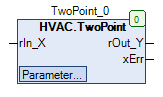
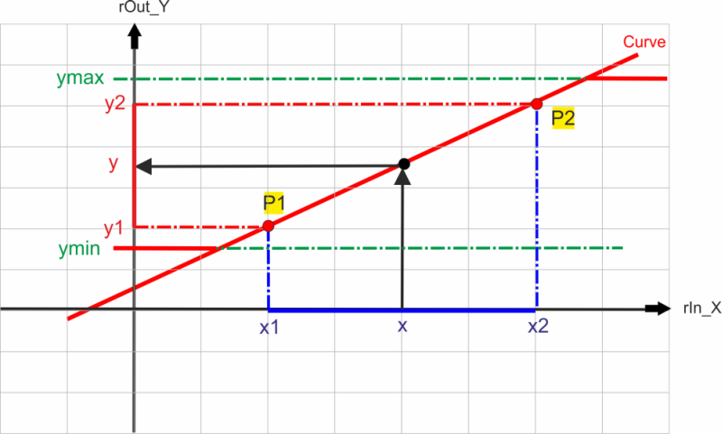

TwoPoint (FB)¶
FUNCTION_BLOCK TwoPoint
Kurzbeschreibung¶
Lineare Umwandlung eines nummerischen Eingangswertes durch eine durch zwei Punkte definierte Kennlinie.
Darstellung¶

Schnittstellen¶
Eingänge¶
Name Datentyp Wertebereich Initialwert Funktion rIn_X REAL 0 Analogwerteingang
Ausgänge¶
Name Datentyp Wertebereich Initialwert Funktion rOut_Y REAL Analogwertausgang xErr BOOL
FALSE: Umwandlung fehlerfrei TRUE: Fehler beim Umwandlungsprozess
Sollwerte / Parameter¶
Name Datentyp Wertebereich Initialwert Funktion x1 REAL 0 Punkt 1 des Eingangsbereiches y1 REAL 0 Punkt 1 der Ausgangskennlinie x2 REAL 100 Punkt 2 des Eingangsbereiches y2 REAL 100 Punkt 2 der Ausgangskennlinie xMinMaxLimit BOOL FALSE Freigabe / Sperrung der Begrenzung am Analogwertausgang rOut_Y iMinMaxOffset INTEGER 0 Werte der Begrenzungen am Analogwertausgang rOut_Y
Funktionsbeschreibung¶
Analogwertausgang rOut_Y¶
Der Analogwertausgang rOut_Y wird vom Analogwerteingang rIn_X in Abhängigkeit der durch die beiden Punkte P1(x1/y1)
und P2(x2/y2) bestimmten linearen Kennlinie berechnet. Im Falle eines Konvertierungsfehlers ( xErr = TRUE ) bleibt der
Analogwertausgang rOut_Y unverändert.

Formel
rOut_Y = (((x1-rIn_X)*(y2-y1))/(x1-x2))+y1
Einschränkungen
Der Analogwertausgang rOut_Y ist vom Datentyp REAL. Durch eine ungeeignete Auswahl der Parameter x1, x2, y1 und
y2 sowie des Wertes des Analogwerteingangs rIn_X kann es zu einer Überschreitung der Grenzen des Datentyps kommen.
Freigabe / Sperrung der Begrenzungen xMinMaxLimit¶
Die Begrenzungen des Analogwertausgangs rOut_Y können mit diesem Sollwert / Parameter generell freigegeben und gesperrt werden.
xMinMaxLimit Begrenzungen Hinweise FALSE keine rOut_Y ohne absolute Begrenzungen TRUE Y_min und Y_max Begrenzung des Analogwertausgangs rOut_Y aktiv
Werte der Begrenzungen iMinMaxOffset¶
Die Begrenzungen des Analogwertausgangs sind nur dann aktiv, falls der Sollwert / Parameter xMinMaxLimit aktiv ( = TRUE ) ist.
Die Grenzwerte Y_min und Y_max werden dann wie folgt berechnet:
Formeln
Y_min = y1 - ((ABS(y2-y1))*iMinMaxOffset)/100Y_max = y2 + ((ABS(y2-y1))*iMinMaxOffset)/100
| y1 | y2 | y2 - y1 | iMinMaxOffset | Y_min | Y_max | Hinweise |
|---|---|---|---|---|---|---|
| 0 | 100 | 100 | 0 | 0 | 100 | Standard-Begrenzungen |
| 0 | 100 | 100 | 10 | -10 | 110 | Positiver Offset |
| 0 | 100 | 100 | -10 | 10 | 90 | Negativer Offset |
Digitalausgang xErr¶
Der digitale Ausgang xErr signalisiert einen Fehler beim Umwandlungsprozess. Folgende Fehler werden berücksichtigt:
- x1 = FALSE UND x2 = FALSE
- x1 = x2
- y1 = TRUE UND y2 = TRUE
- y1 = y2
Fehler beim Umwandlungsprozess xErr Hinweise FALSE FALSE Umwandlung fehlerfrei TRUE TRUE Fehler beim Umwandlungsprozess
Legende: X = beliebig
Visualisierung¶
Information¶
Element Autoren Datum Version Anmerkungen Funktion Adam Bartod 04.2016 1.0 Ursprungsversion Programmierung Adam Bartod 04.2016 1.0 Ursprungsversion Test Alexander Halter, Jochen Reu 12.2016 1.0 Ursprungsversion Dokumentation Jochen Reu 10.2017 1.0 Ursprungsversion Revision Lukas Pfänder 11.2017 0.1.3.0 Dokumentation
Codesys¶
- InOut:
Scope Name Type Initial Comment Input rIn_X REAL 0 Analogwerteingang Output rOut_Y REAL Analogwertausgang xErr BOOL Error Ausgang FALSE: Umwandlung fehlerfrei TRUE: Fehler beim Umwandlungsprozess Input iMinMaxOffset INT 0 Wert der Begrenzungen am Analogwertausgang rOut_Y xMinMaxLimit BOOL FALSE Freigabe / Sperrung der Begrenzung am Analogwertausgang rOut_Y y2 REAL 100 Punkt 2 der Ausgangskennlinie x2 REAL 100 Punkt 2 des Eingangsbereiches y1 REAL 0 Punkt 1 der Ausgangskennlinie x1 REAL 0 Punkt 1 des Eingangsbereiches